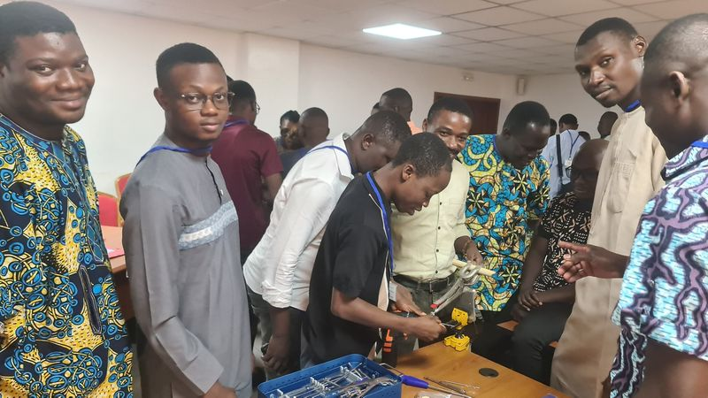
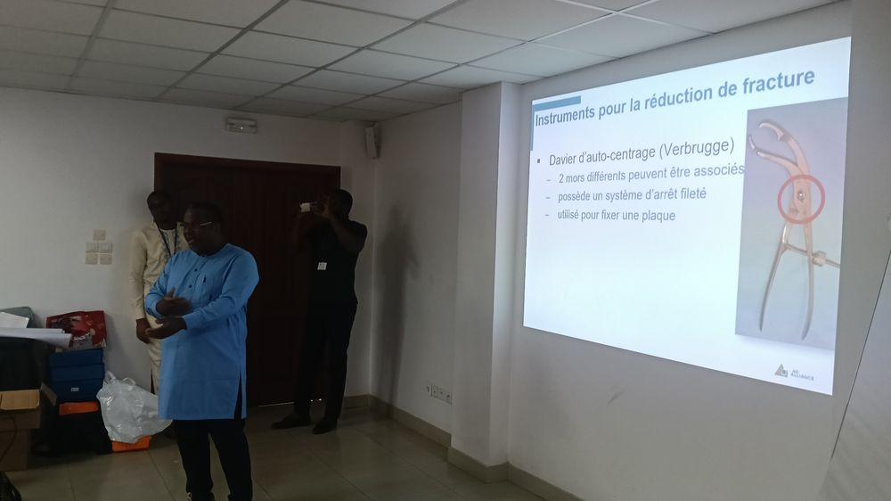
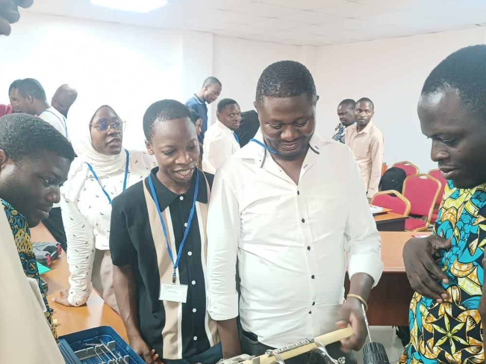

Se former
Le calendrier des sessions
Tous nos formats, du cours opératoire de trois jours au séminaire thématique d’une journée, avec les places restantes et les conditions d’inscription.
0 session(s)
État :
[JJ]
[MOIS]
2026
Cours opératoireInscriptions ouvertes
Principes du traitement non opératoire des fractures
08
OCT
2026
SéminaireInscriptions ouvertes
Ostéosynthèse des fractures proximales du fémur
[JJ]
[MOIS]
2026
Cours opératoireComplet
Cours pour personnels de bloc opératoire
[JJ]
[MOIS]
2026
SéminaireInscriptions ouvertes
Traitement de l’infection osseuse et des pertes de substance
[JJ]
[MOIS]
2026
SéminaireBientôt
ECMES — fractures des os longs de l’enfant
[JJ]
[MOIS]
2026
Cours opératoireBientôt
Fractures ouvertes et prise en charge d’urgence
Aucune session ne correspond à ces critères.
Nos formats
Trois manières d’apprendre

Cours opératoire
Trois jours d’ateliers pratiques sur modèle osseux et pièce anatomique : voies d’abord, réduction, choix et pose de l’implant.
3 jours[XX] participants

Séminaire de traumatologie
Une à deux journées sur un thème précis, alternant cas cliniques, discussions et démonstration.
1–2 jours[XX] participants

Cours personnels de bloc opératoire
Stérilisation, instrumentation, préparation du patient, sécurité et maintenance du matériel d’ostéosynthèse.
2 jours[XX] participants
Accueillir une session dans votre hôpital
Nous organisons des sessions à la demande d’un service ou d’une direction, sous réserve d’un groupe suffisant et d’un espace de démonstration.